I recommend getting a T48 programmer from XGecu. It's easy to use, connects to your computer through USB and will work with most ROMs available. XGecu's Xgpro program for Windows also lets you use this programmer to test most of the logic ICs on the Leningrad-1.
For Linux and Mac users, Minipro is in development as an open source cross-platform alternative to XGecu's proprietary Windows-only software. As of the time of writing, it's still a CLI-only tool with "experimental" T48 support.
If you'd rather not use the Windows utility due to Microsoft ending Windows 10 support, note that it's possible to activate Windows 10 LTSC 2021 (supported until 2032) with an open source utility. Windows LTSC is essentially Microsoft's 'good edition' of Windows, and comes without all the bloatware bundled into W10/11 Pro.
There's one thing to keep in mind, though - When used in a device designed for a 27128, the extra higher address pins of larger capacity (E)EPROMs will be connected to VCC (logic 1). Therefore, you'll need to write the 16KB binary data to the upper 16KB of memory.
This chart shows configurations for writing several types of EEPROM.
|
|
|
|
|
|
|
27128/27C128
|
|
|
|
|
|
27256/27C256
|
|
|
|
|
|
28C256
|
|
|
|
|
|
27512/W27C512
|
|
|
|
|
Technically it doesn't matter what you write in the "Leave blank" space, since it won't be read by the computer.
 XGecu T48 Compatibility List
XGecu T48 Compatibility List
TXT document, 1.27 MB - List of which (E)EPROMs
are compatible with the T48 programmer.
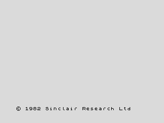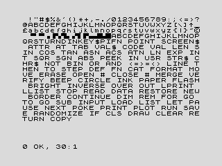
 Sinclair BASIC ROM
Sinclair BASIC ROM
BIN data, 16.0 KB - Original 1982 Sinclair
48K BASIC.
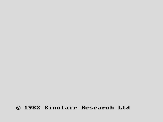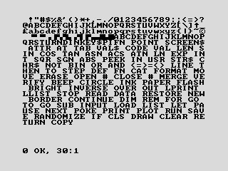
 Baltic ROM v1.0
Baltic ROM v1.0
BIN data, 16.0 KB - Developed in Belarus.
Replaces the Sinclair characters with bold, MS-DOS style characters.
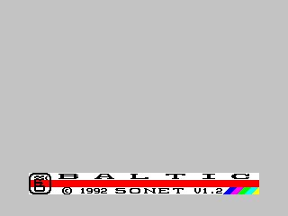
 Baltic ROM v1.2
Baltic ROM v1.2
BIN data, 16.0 KB - Developed in Belarus
in 1992.
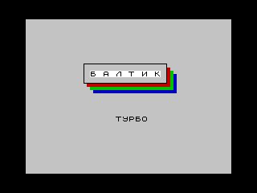
 Baltic Turbo ROM
Baltic Turbo ROM
BIN data, 16.0 KB - Developed in Belarus.
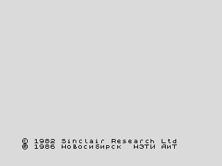
 Novosibirsk NETI AiT ROM
Novosibirsk NETI AiT ROM
BIN data, 16.0 KB - Developed in Novosibirsk,
Russian SFSR in 1986.
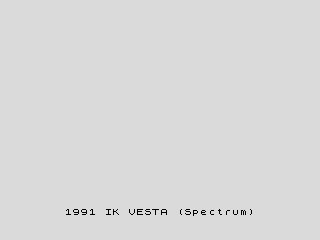
 Vesta IK-30 ROM
Vesta IK-30 ROM
BIN data, 16.0 KB - Developed in Russia in
1991.
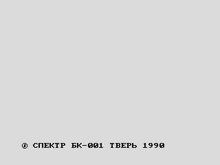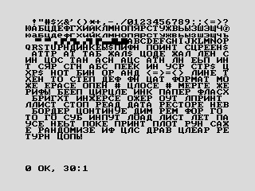
 Spektr BK-001 ROM
Spektr BK-001 ROM
BIN data, 16.0 KB - Developed in Tver, Russian
SFSR in 1990. Replaces the Sinclair characters with bold, MS-DOS style
characters. A Cyrillic character set can be activated by pressing Symbol
Shift + Space.
 Gosh Wonderful ROM v1.32
Gosh Wonderful ROM v1.32
BIN data, 16.0 KB - Developed by Geoff Wearmouth
in 2004. Upgraded version of Sinclair BASIC.
Instructions
HTML page, 25.9 KB
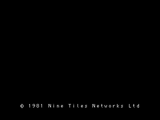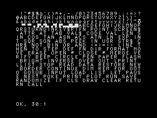
 OpenSE BASIC ROM v3.1.2
OpenSE BASIC ROM v3.1.2
BIN data, 16.0 KB - Developed in 2012. Upgraded
version of Sinclair BASIC.
 Instructions
Instructions
PDF document, 652 KB
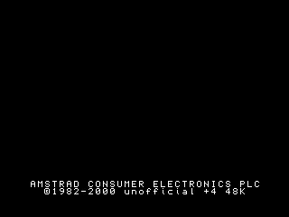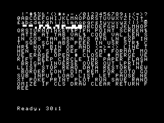
 Unofficial Spectrum +4 BASIC ROM
Unofficial Spectrum +4 BASIC ROM
BIN data, 16.0 KB - Developed by Andrew Owen
in 2000. Upgraded version of Sinclair BASIC.
 Instructions
Instructions
TXT document, 7.24 KB
 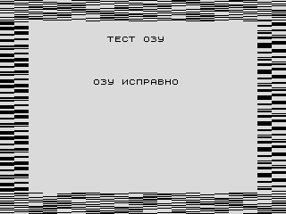
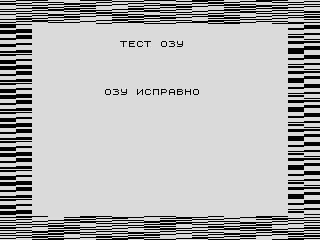
 cxemateka.ru Diagnostic ROM
cxemateka.ru Diagnostic ROM
BIN data, 2.00 KB - Developed by Konstantin
Aigi. Tests buffer and RAM. All text is in Russian. Write to beginning
of the 16KB block applicable to your (E)EPROM. (e.g., beginning at 0000,
4000 or C000 - see table above)
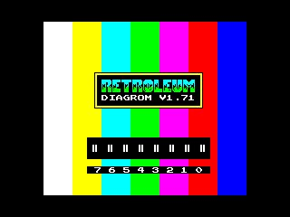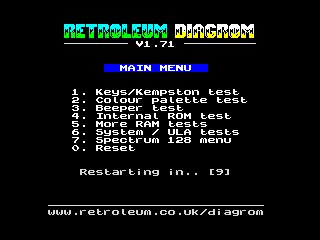
 Retroleum Diagnostic ROM v1.71
Retroleum Diagnostic ROM v1.71
BIN data, 16.0 KB - Developed by Phil Ruston
in 2024. Extremely comprehensive, can test pretty much every part of the
system. Some tests may report errors due to differences in the Leningrad-1's
hardware compared to the original ZX Spectrum.
 Instructions
Instructions
PDF document, 100 KB - Note that some of
the troubleshooting steps in this document apply only to the original ZX
Spectrum.